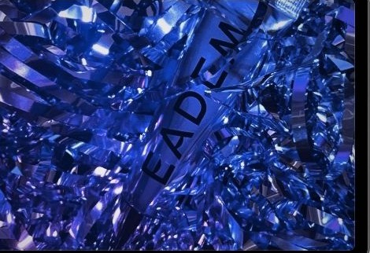
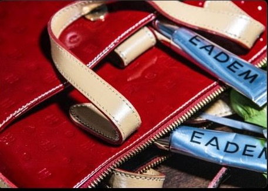
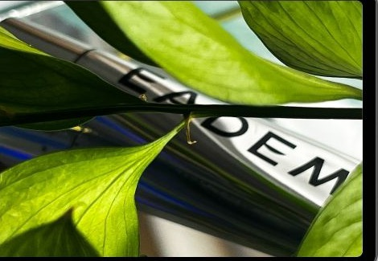

01 — THE SERIES
Small goods, full campaign
Four sets, four moods — silver chrome, violet shred, patent red, greenhouse light.




ROLEart direction · photography · set styling
FORMATeditorial product styling series
STATUSself-initiated — not commissioned